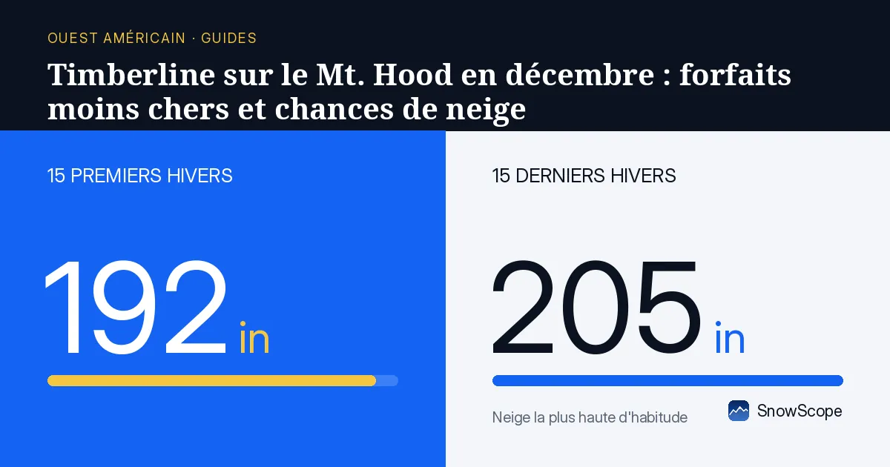

Timberline sur le Mt. Hood en décembre : forfaits moins chers et chances de neige
Le domaine skiable de Timberline Lodge se situe sur le plus haut volcan de l'Oregon avec une neige qui s'épaissit nettement au fur et à mesure de l'altitude. Mi-montagne offre une poudreuse fiable en décembre, et les forfaits après-midi hors pointe réduisent le coût de près de moitié par rapport aux jours de pointe.
Consultez les prévisions neige en temps réel pour Timberline Lodge Ski Area sur l'application SnowScopeHauteurs de neige, alertes poudreuse et carte 3D, gratuitement.
L'altitude fait la différence en début de saison
Timberline s'étend sur 1 372 m de dénivelé vertical sur le versant sud du Mont Hood. La base à 1 214 m se situe dans une zone de neige marginale en décembre, mais monter en remontée change tout. À mi-montagne à 1 900 m, vous atteignez la saison fiable ; au sommet, 2 586 m, la neige est presque toujours au rendez-vous.
Le 15 décembre, les profondeurs typiques sont 42 cm à la base, 132 cm à mi-montagne et 147 cm au sommet. Dans 1 hiver sur 10 du passé, la base était dénudée tandis que la haute montagne offrait un bon ski. C'est pourquoi Timberline a 12 remontées : elles vous permettent de sauter le bas et de travailler le terrain supérieur.

Quand acheter : quatre tarifs de forfait
Le tarif 2026-27 de Timberline offre des tarifs clairs hors pointe et de pointe. Un forfait journée entière pour adulte (19–64 ans) coûte 129 $ hors pointe ou 161 $ les jours de pointe. Un forfait après-midi de midi à la fermeture coûte 96 $ hors pointe ou 124 $ de pointe. Les jours de pointe incluent tous les week-ends et du 21 décembre au 1er janvier.
L'option la moins chère est un après-midi hors pointe en début décembre à 96 $. Une journée entière en semaine début du mois coûte 129 $. Si vous devez skier la semaine des fêtes (21 déc–1er jan), prévoyez 161 $ pour une journée entière ou 124 $ pour l'après-midi. Les jours de semaine mi-décembre offrent le meilleur équilibre entre prix et fiabilité.

À quelle fréquence mi-montagne a-t-elle de la bonne neige ?
À 1 900 m, la bonne neige (une moyenne hebdomadaire de 50 cm ou plus) apparaît dans 76 % des hivers la première semaine de décembre, 74 % la deuxième semaine, et 85 % chacune des deux semaines avant le Nouvel An. Ces probabilités s'améliorent au fil de la saison.
L'écart entre les bons et les mauvais hivers est important. Le 15 décembre, un hiver sur dix n'avait que 26 cm de neige à mi-montagne, tandis qu'un sur dix en avait 281 cm. La saison dernière était notamment faible cette date : la montagne a commencé sans neige. Les pentes supérieures restent plus fiables : le 15 décembre, 80 % des hivers avaient 50 cm ou plus au sommet.
Comment cela se compare à White Pass et Mt. Bachelor
White Pass dans l'État de Washington, 60 miles au nord, vend en ligne de 69 $ hors pointe à 119 $ de pointe. Sa profondeur typique à mi-montagne le 15 décembre est 102 cm, avec de la bonne neige dans 87 % des hivers. Mt. Bachelor près de Bend, en Oregon, se situe plus haut et reçoit plus de neige : 139 cm le 15 décembre typique, bonne dans 83 % des hivers.
Mi-montagne de Timberline à 132 cm le 15 décembre se situe entre eux en profondeur de neige. Pour une neige purement décembriste, Mt. Bachelor avance légèrement, mais Timberline coûte moins cher que les deux si vous réservez des jours de semaine hors pointe début du mois. White Pass gagne sur le prix si vous achetez bien à l'avance.
Ce que les pentes supérieures montrent
Le sommet de Timberline à 2 586 m est où la fiabilité de la neige en décembre devient très élevée. Le 15 décembre, la profondeur typique est 147 cm, et la bonne neige apparaît dans 80 % des hivers. Le jour de Noël, la profondeur typique atteint 185 cm, et le 31 décembre, elle atteint 228 cm.
Dans un hiver faible (un sur dix), même le sommet n'avait que 103 cm le 15 décembre. Dans un gros hiver, le sommet contenait 310 cm. Si vous skiez les pentes supérieures et évitez les remontées de base, mi-décembre et après, c'est très solide.
Planifier votre visite
Réservez un après-midi hors pointe les trois premières semaines de décembre pour combiner un prix bas et de bonnes probabilités. Prenez les remontées haute vitesse directement vers mi-montagne ou le sommet ; ignorez la base en début de saison. D'ici la semaine de Noël, toute la montagne a une neige fiable à toutes les altitudes, mais attendez-vous à une tarification de pointe et à des foules.
L'US-26 depuis Portland grimpe à Government Camp à environ 1 829 m ; les chaînes peuvent être requises même quand le domaine skiable est ouvert. Vérifiez la prévision routière avant de partir. La carte de neige vous indiquera si ce décembre est un décembre avec beaucoup ou peu de neige, et vous pourrez planifier votre stratégie d'altitude en conséquence.
Conseils aux skieurs
- Skiez un après-midi de semaine les deux premières semaines de décembre au tarif hors pointe de 96 $ ; la haute montagne a de bonnes probabilités de neige et vous évitez les foules des fêtes.
- Commencez votre journée à mi-montagne ou au sommet : les remontées de base desservent une neige fine en début décembre. Gardez les pistes basses pour la fin de saison.
- Attendez-vous à un hiver sur dix qui commencera très faible à la base. Si vous arrivez sur un sol dénudé, prenez la remontée à 1 900 m ou plus haut où la neige est plus assurée.
- Portez des chaînes et vérifiez l'état des routes US-26 avant de partir de Portland ; Government Camp se situe à 1 829 m et la neige y est courante en décembre.
- Consultez la carte de neige SnowScope la semaine avant votre voyage pour voir si ce décembre se profile comme un décembre avec beaucoup ou peu de neige ; l'écart est important.
À propos de ces chiffres
Les hauteurs de neige des stations sont la neige la plus épaisse sur le haut du domaine à la date indiquée ; ce sont des estimations pour une zone, pas une mesure en un point. Les prévisions peuvent changer. Consultez toujours le bulletin d'avalanche officiel avant le hors-piste.
Bulletins d'avalanche officiels: avalanche.org (US national portal)
Citer ce bulletin
Pour la recherche, l'enseignement ou la presse : chiffres et graphiques réutilisables librement sous CC BY 4.0 avec cette citation.
SnowScope (2026), Timberline sur le Mt. Hood en décembre : forfaits moins chers et chances de neige, https://snowscope.app/blog/fr/2026/11/timberline-mt-hood-december-ski-on-a-budget.html, consulté le 2026-11-15
SnowScope (Atlas Labs). (2026, November 15). Timberline sur le Mt. Hood en décembre : forfaits moins chers et chances de neige. SnowScope snow reports. https://snowscope.app/blog/fr/2026/11/timberline-mt-hood-december-ski-on-a-budget.html
BibTeX
@misc{snowscope2026timberlinemthooddecember,
author = {{SnowScope (Atlas Labs)}},
title = {Timberline sur le Mt. Hood en décembre : forfaits moins chers et chances de neige},
year = {2026},
month = nov,
howpublished = {\url{https://snowscope.app/blog/fr/2026/11/timberline-mt-hood-december-ski-on-a-budget.html}},
note = {Published 2026-11-15 09:34 UTC; accessed 2026-11-15}
}· CC BY 4.0 · Méthodes, données et outils →
Suivre Timberline Lodge Ski Area
Gratuit : un message quand la neige arrive, et la météo chaque matin.